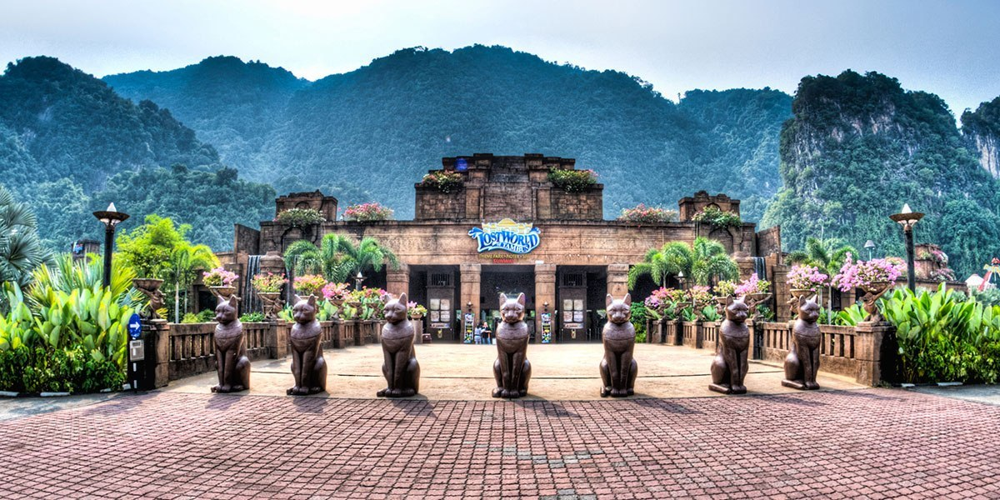
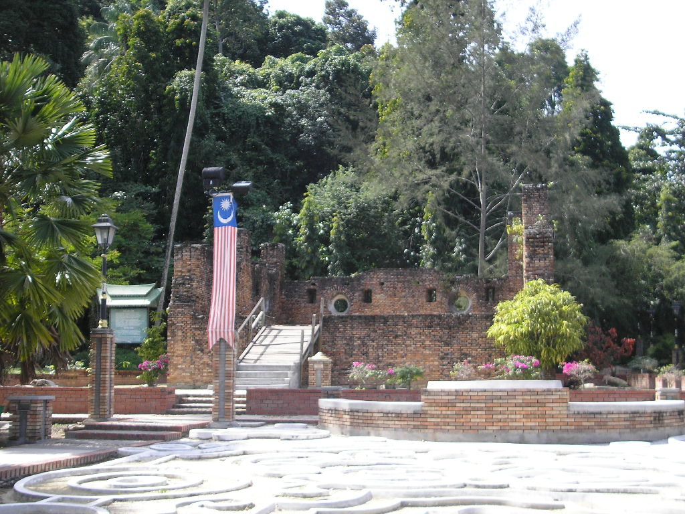
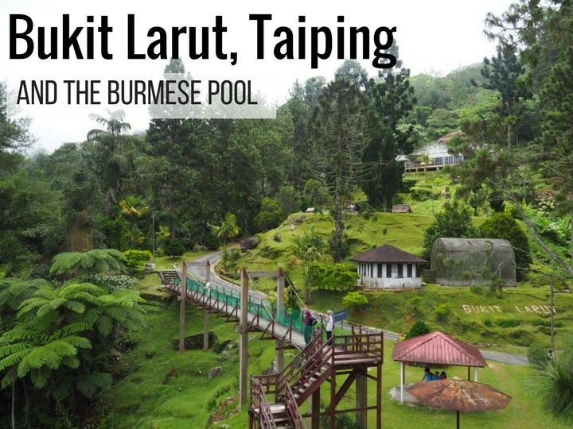
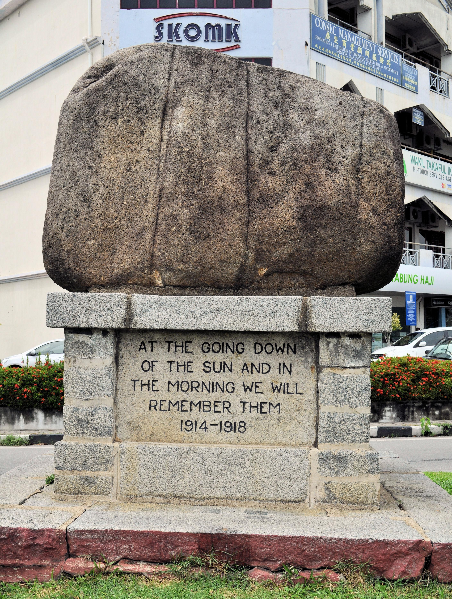
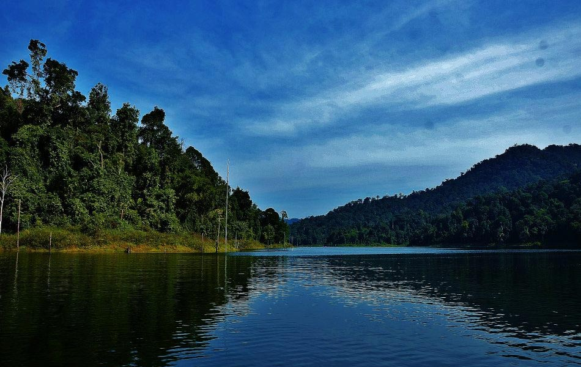

Perak is one of the most criminally underrated states in Malaysia, hiding limestone cliffs and mysterious cave temples within its reach. The cities of Ipoh and Taiping both boast stunning architecture and a thriving food scene. Culture Trip recommends spending two nights in Ipoh, where you can explore the Ipoh Heritage Trail, visit cave temples and discover Neolithic cave art. The half-finished and haunting Kellie’s Castle sits in nearby Batu Gajah. Former tin-mining Taiping on the other hand is entirely off the tourist trail (for now), but the little-known city features English-style Lake Gardens, Taiping Zoo (with orangutans) and dramatic mountains. Culture Trip also recommends exploring Pangkor Island’s quiet beaches and Malaysia’s very own Leaning Tower of Teluk Intan.

Lost World Of Tambun
World of Awesome Moments!Cocooned by lush tropical jungle, natural hot springs, 400 million-year-old limestone hills and 88 attractions from 10 amazing parks. Sunway Lost World Of Tambun makes a unique eco-adventure excursion for visitors of all ages.
Address: 1, Persiaran Lagun Sunway, Sunway City, 31150 Ipoh, Negeri Perak

Dutch Fort
The Dutch Fort is a fort in Pangkor Island, Manjung District, Perak, Malaysia. The ruins are the remnants of an outpost of Dutch attempts to control trade in the Malay peninsula. In the Malay language, the fort is called Kota Belanda.
Address: 32300 Pangkor Island, Perak

Bukit Larut
Jalan Bukit Larut, or Maxwell Hill Road, Federal Route 315, is a federal road in Perak, Malaysia. The road connects Taiping Lake Gardens in Taiping until Bukit Larut summit.

Batu Bertenggek
Perched rock is a large rock, the size of a Kancil car parked on another building facing the SKOMK building. This perched stone is a Monument to soldiers who died during World War II.
Address: Pekan Teluk Intan, 36000 Teluk Intan, Perak

Tasik Temenggor
Temenggor Lake is a lake in Hulu Perak District, Perak, Malaysia. It is the second largest lake in Peninsula Malaysia after Kenyir Lake in Terengganu. This man-made lake is located south of 1,533 m high Ulu Titi Basah peak. It was created after the construction of Temenggor Dam to generate electric power